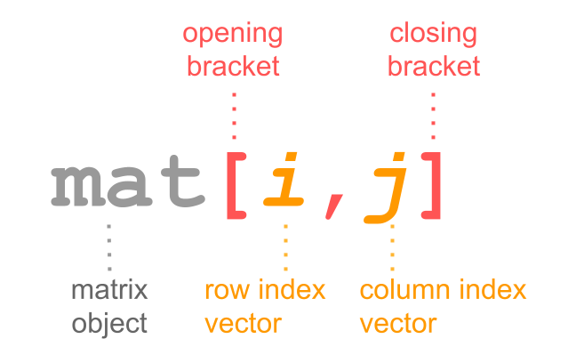
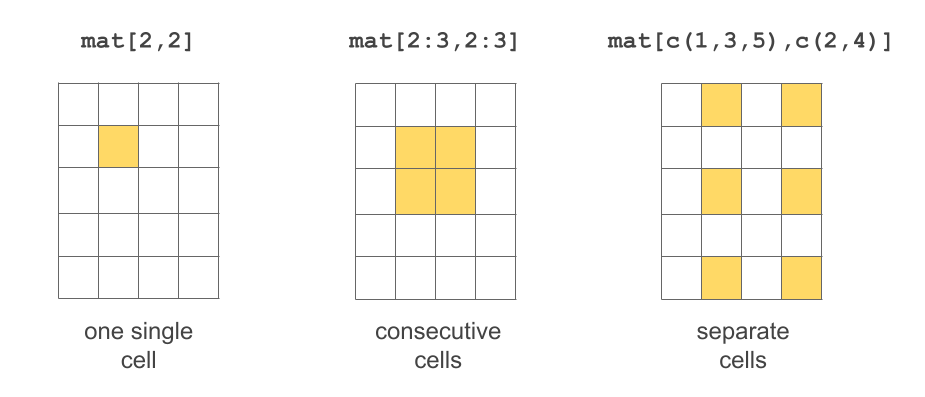
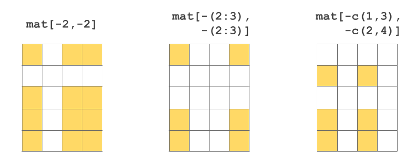
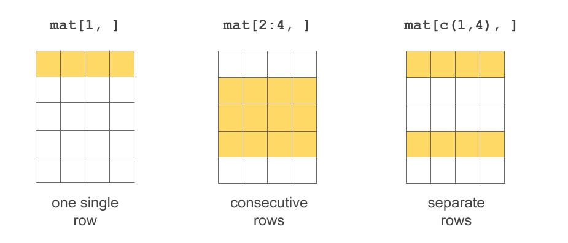

Now that you have seen some ways to create matrices, let’s discuss a number of basic manipulations of matrices. I will show you examples of various operations, and then you’ll have the chance to put them in practice with some exercises listed at the end of the chapter.
7.1 Basic Operations with Matrices
Selecting elements:
select a given cell
select a set of cells
select a given row
select a set of rows
select a given column
select a set of columns
Adding a new column
Adding a new row
Deleting a column
Deleting a row
Renaming a column
Moving a column
Let’s say you have a matrix mat with the following content:
The matrix mat is a 2-dimensional object: the 1st dimension corresponds to the rows, while the 2nd dimension corresponds to the columns. Because mat has two dimensions, the bracket notation involves working with data frames in this form: mat[ , ].

Bracket notation in matrices
In other words, you have to specify values inside the brackets for the 1st index, and the 2nd index: mat[index1, index2].
Selecting cells

Several ways to select cells
# select value in row 1 and column 1mat[1, 1]
[1] 0
# select value in row 2 and column 3mat[2, 3]
[1] 1025
# select values in these cellsmat[1:2, 3:4]
moneymkt certificate
1 1000 1000
2 1025 1030
It is also possible to exclude certain rows-and-columns by passing negative numeric indices:

Several ways to exclude cells
Selecting rows

Several ways to select rows
If no value is specified for index1 then all rows are included. Likewise, if no value is specified for index2 then all columns are included.
# selecting first rowmat[1, ]
year savings moneymkt certificate
0 1000 1000 1000
# selecting third rowmat[3, ]
year savings moneymkt certificate
2.000 1040.400 1050.625 1060.900
What if you want to move one or more columns to a different position? For example, what if you want to move year to the last position (last column)? One option is to create a vector of column indices in the desired order, and then use this vector (for the index of columns) to reassign the matrix like this: